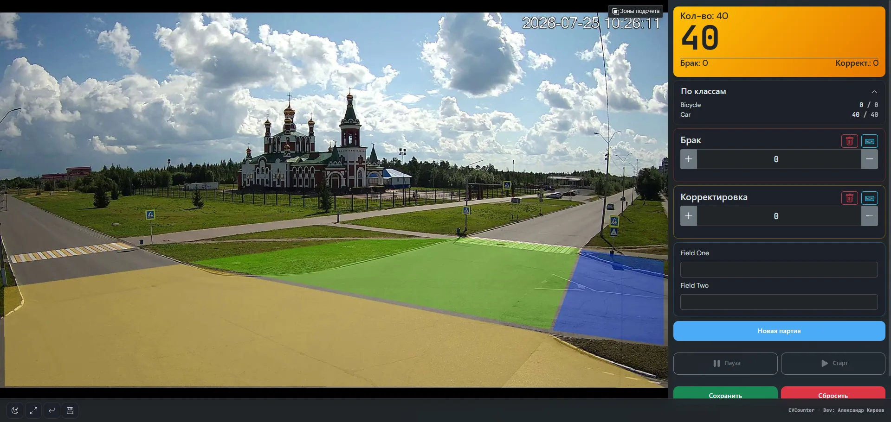
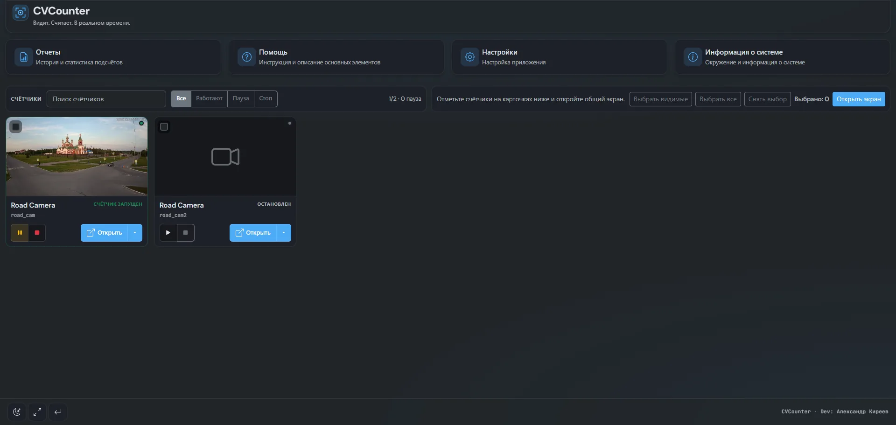
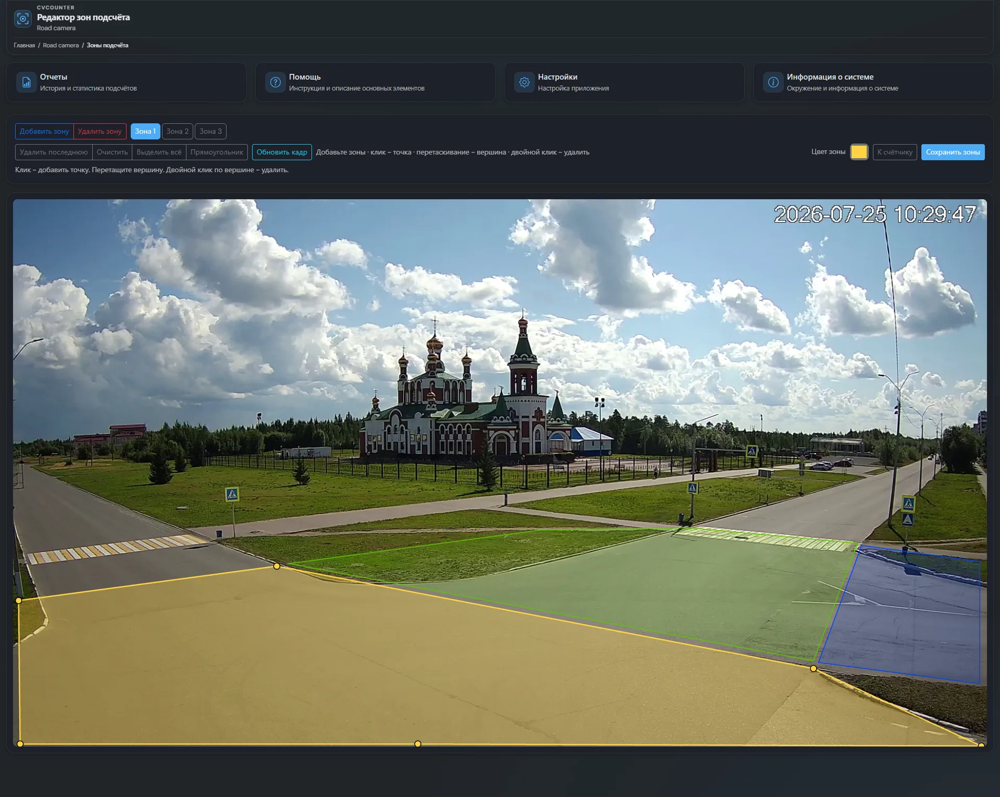
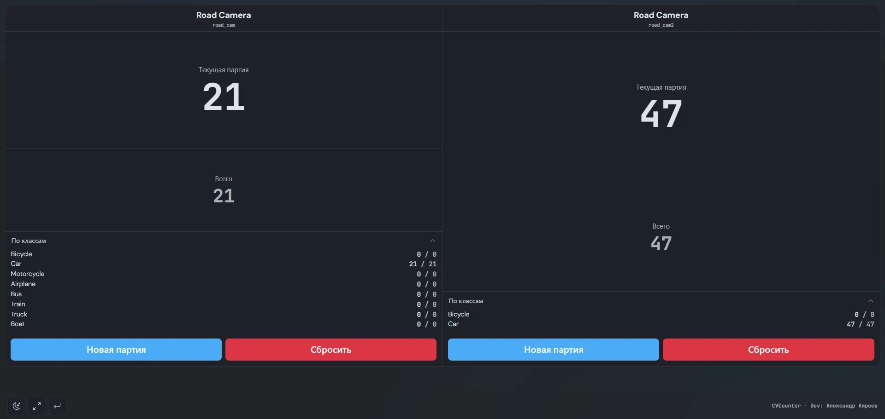
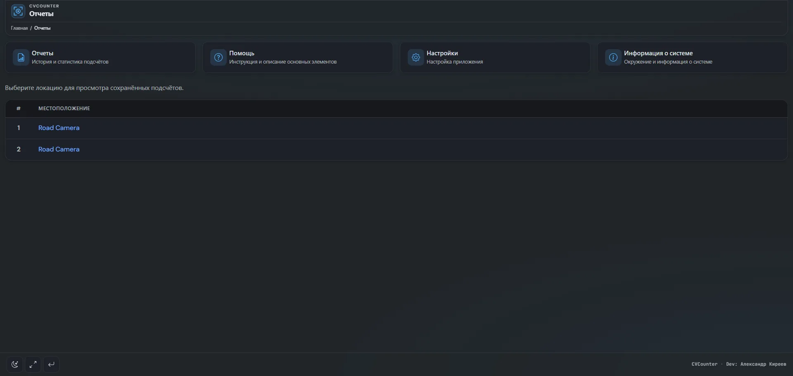

detect
Детекция в реальном времени
RTSP, веб-камера или файл. Обработка на сервере.
Подсчёт объектов с камер: детекция, трекинг и зоны — на линии, складе или у входа. Клиентам достаточно браузера.
Подсчёт с камер без тяжёлого клиента — линия, склад, вход, только браузер.
RTSP, веб-камера или файл. Обработка на сервере.
ID между кадрами, меньше повторных срабатываний.
Один или несколько полигонов на кадр.
Партия и итог отдельно по каждому классу.
Видео, текст или несколько счётчиков — для киосков.
Единый реестр детекторов, выбор в конфиге.
Типовые сценарии — отдельные страницы под поисковые задачи.
Захват с камеры, RTSP или файла.
Модель находит объекты и классы.
Устойчивый ID между кадрами.
Вход в зону увеличивает счётчики.
Сохранение и просмотр в веб-UI.
Что уже есть в продукте, а не только в ноутбуке с моделью.
| Возможность | Скрипт YOLO | CVCounter |
|---|---|---|
| Веб-UI и киоск | Нужно писать | Есть |
| Зоны подсчёта (полигоны) | Вручную | Редактор в UI |
| Несколько счётчиков | С нуля | Мульти-вид |
| Отчёты и партии | С нуля | Встроены |
| YOLO / OpenCV / ONNX | Один стек | Реестр бэкендов |
Flask-панель: счётчики, зоны, отчёты.





Да — конвейер, склад, цех. Подробнее на странице производства и склада.
RTSP, веб-камера и видеофайлы.
Желателен для real-time; CPU тоже работает, зависит от модели и разрешения.
Да, лицензия AGPL-3.0. Исходники на GitHub.
Версия 5.4.1. Исходники и Docker — на GitHub.